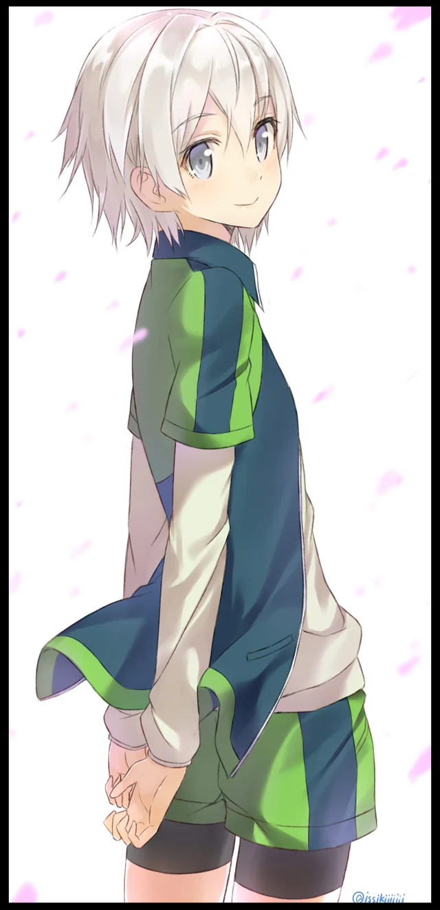

Сайка Тоцука
| Аниме: | Как и ожидалось, моя школьная романтическая жизнь не складывается (Oregairu) |
| Роль: | Президент теннисного клуба |
| Пол: | Мужской |
| Рост: | 158 см |
| Вес: | 46 кг |
Описание
Одноклассник Хачимана и капитан школьного теннисного клуба. Обладает чрезвычайно мягким, добрым и робким характером, а его миловидная женственная внешность постоянно вводит в заблуждение окружающих.
Сайка искренне стремится стать более мужественным и улучшить свои навыки в теннисе. Он один из немногих людей в школе, кто тепло относится к Хачиману и стремится проводить с ним время, что часто вызывает у последнего внутреннее смущение.